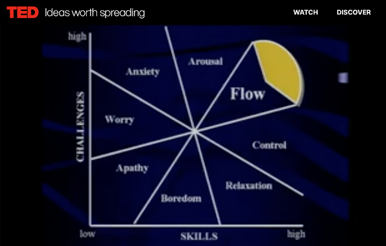
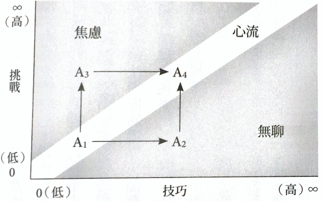

心流與入神
針對「心流」這個概念，我和 鋼琴輕鬆談-「 手指建立&音色表達」Awaken your inner Pianist 的嚴文君老師分別從鋼琴和耐力訓練的角度談論過多次，前幾天她傳來一個跟心流有關的問題：「下面這兩個圖都是米哈里寫的，上面電腦截圖是米哈里於 2004 年的 Ted 演講的投影片，下面是《心流》書上附圖，你覺得哪一個寫得比較好？」這個問題引發我濃厚的興趣。


第一張圖是「心流」這個概念的創始人—米哈里於 2004 年 TED 的演講影片中所截錄下來的：
● 縱軸：當下正在面對的挑戰難度高低
● 橫軸：該挑戰所需技巧／技能的高低
□ Flow：心流。米哈里在演講中提到，心流渠道只有在你做你真正喜歡的事情時才會開放，也許是彈鋼琴、跟好朋友在一起、跑步、唱歌、繪畫、寫作或是工作。
□ Arousal：激發，是一個很好的區域。此時挑戰太大，你此時的技能無法應付，但在此時仍可比較容易轉入心流區，只要再提升一點技巧即可。所以，在激發狀態時，多數人都可以透過進一步的學習而體驗到心流。這是有助於人們被推離舒適圈的地方。若要進入心流狀態，他們就得發展更高的技巧。
□ Control：掌控，也一樣是個好區域。因為在這裡你會感覺舒服，但不會很興奮，因為對自己的挑戰不高；所以如果想從控制區進入心流，就需要提高挑戰。
● 當人處在激發區與控制區時，都會比較有機會進入到心流。其他挑戰和技能的組合，就逐漸變得比較不理想，如下：
□ Relaxation：放鬆。在這裡沒什麼不好的，你很舒服，但離心流的體驗較遠。
□ Boredom：無聊。怪物等級太低，（遊戲/工作/任務）太簡單，沒有挑戰性，從事該活動不久後就會令人厭煩。書中沒有 Control 和 Relaxation，A2 區都是無聊/厭煩，但是演講中的投影片有清楚地說明各種狀態，當技巧達到一定程度時，我們較容易處在激發區和掌控區，不會只有厭煩
□ Apathy：冷漠，非常消極，對所做的事無動於衷，不會動用到技能，沒有挑戰可言。米哈里在演講中提到「不幸的是，大多數人的體驗都處在冷漠中；造成這種體驗的最主要活動例如看電視或是在廁所裡坐著(聽眾笑)」「雖然有時看電視(7~8%的時間)會進入心流，但那是當你選到真正想看的節目並從中得到回饋時」
□ Worry：擔心。未來的挑戰很大，超過自己的能力時。
□ Anxiety：焦慮。越級打怪，此時會很容易失去自信，自覺現在的技能無法負荷即將到來的巨大的挑戰。
看過影片之後認為兩種都沒錯，只是表達的層級不同，兩張圖都有缺陷，但可以剛好互補。在《心流》書中這張圖（第二張附圖）的文字下面，有一段寫道：「A 代表正在學網球的孩子艾力克斯。這張圖指出他學習打網球時的四個階段。開始打網球的艾力克斯(A1)不具任何技能，唯一的挑戰就是把球打過網。這不是什麼了不起的事，不過艾力克斯倒也樂在其中，因為這困難度差不多剛好是他應付得來的，所以這時候他很可能處於技巧心流中。但是他不能一直留在原地，經過一段練習後，他的技能會提升，這時光是把球打過網對他來說變得無聊了(A2)。」
演講中的圖說明技能升級後，想達到心流，挑戰必須跟著升級，此時已經回不去了：太低的挑戰已經無法使人體驗到心流狀態。但書中圖片（第二張附圖）的缺點是（單只看圖不讀文字）會以為，技術提升後，降低要求與挑戰也可以達到心流狀態。
但演講中的圖片也不完整，它無法陳述出低技巧的人也能達到心流狀態，例如小朋友沒有畫畫技巧，但他們在白紙上可以(安靜)不說話畫上很久；入門跑者就算跑步技巧不高，但已經能跑，就有機會體驗到心流。所以兩張圖各有優缺點。書中的圖描述了心流的歷程，由低技巧到高技巧都可以達到心流；演講圖中的黃色區域是特別針對已發展出高度技巧的人士而畫的，他/她們回不去了，低挑戰已經無法達到心流狀態。
所以入門跑者和基普喬格都可以體驗到心流狀態，但兩者的體驗質量是不一樣的，後者（神人）的體驗會更為浩瀚與深邃。
－－
註１：書本上的附圖來自行路出版社，遠足發行，2019 年 4 月出版的繁體版 122 頁；簡體版出自中信出版社，2017 年 12 月出版，161 頁。作者稱白色的區間為「心流渠道」，它是挑戰與技巧的黃金比例。
註２：下面是米哈里於 2004 年的 TED 演講連結：
https://reurl.cc/XXyQ7M
在這個演講中提到一個我首次接觸的詞彙「ecstatic」，那是一位作曲家用來描述他作曲順利的時候的感覺，「ecstatic」在希臘文中的原始義是站在某個東西旁邊，後來變成描述精神的一種狀態，中文可以譯成「入神」，它是一種你感覺到從事「非日常活動」的精神狀態，所以「ecstatic」這個詞是指「進入另一種現實」。米哈里在演講中的延伸說明很有意思：
「從這個詞，我們可以想一想，過去人類達到巔峰的幾個古代文明，無論是印度、希臘、中國、馬雅、埃及等文明，他們『進入另一種現實』的方法是建造神殿、宮殿、寺廟、圓形舞台、劇場或競技場，他們可以在這些地方體驗到入神的狀態，因為這些地方有助人們用一種更聚焦、更有秩序的方式體驗生命。」
而這個作曲家想要「進入另一種現實」、想要體驗入神，並不需要去這些地方，他只需要一張紙，在上面寫些小符號，只要這樣做，他腦海中就能想像出音樂，開始進行創作，而一旦他進入創作狀態，一個新的現實就出現了，這就是入神的時刻。他進入了另一種現實。這位作曲家提到，在這種狀態中，感受非常強烈，以致於他幾乎感覺不到自己的存在。我們常用「神人」稱呼這類人，這也跟「ecstatic（入神）」這種心理狀態互相呼應。